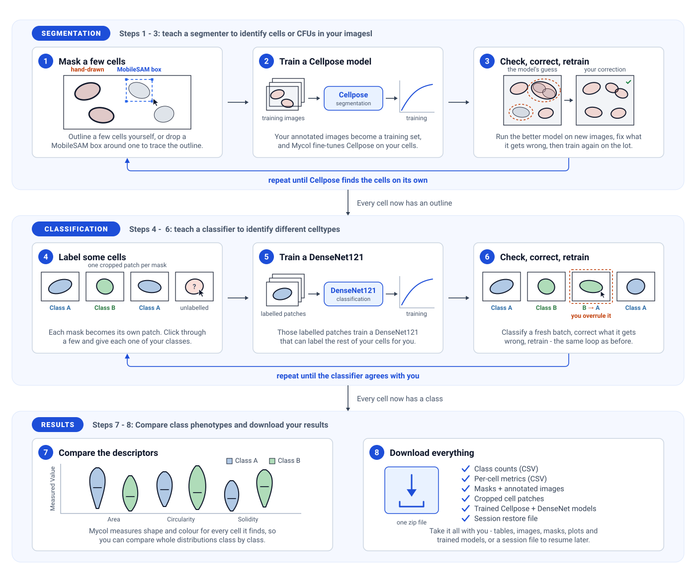
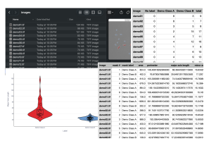

Mycol Image Analysis Workflows
From raw microscopy images to trained models and quantitative cell-level insights.
Mycol guides you through a step-by-step pipeline from raw microscopy images to trained AI models and quantitative cell descriptors. Each stage builds on the last, but you can enter or exit at any point depending on what you already have.
Start by uploading your images and any existing masks or models. Move to the annotation page to manually or automatically segment and classify cells using Cellpose or MobileSAM (segmentation) and DenseNet (classification) models. If you want to improve the automated results, use the training page to fine-tune a Cellpose or DenseNet model on your own annotated data. Newly trained models can be instantly used on the annotation page to annotate more images. Finally, the phenotypes page lets you visualize and export cell population statistics (shape, size and colour descriptors) across classes and experiments. At any point you can download your annotated data, trained models, or a full session restore file for reuse and publication.

Upload Your Data
Import your images into Mycol, along with other files from earlier work.
Every session starts here by dropping files into the uploader. Mycol sorts them for you and lists uploaded images with associated masks.
ImagesRequired.tif.tiff.png.jpg.jpeg
The biological images you want to analyse, the only thing you need to start. Although the Cellpose models support 3D image analysis, this funcitonality is not supported here - only 2D images are accepted.
Mycol also processes all images in a session assuming they have the same magnification - analyze images with different magnifications in separate sessions.
-
MasksOptional
.tif.tiff.npy
A file containing previously generated cell outlines for an uploaded image. Use a labelled TIFF file from Mycol or a Cellpose.npyfile. -
Cellpose modelOptional
.pt.pth
A previously trained segmentation model. Without one, Mycol uses out-of-the box Cellpose models. Learn about Cellpose → -
DenseNet modelOptional
.pt.pth
A previously trained cell classification model. Without one, you can label cells by hand or train a model in Mycol. Learn about DenseNet → -
Cellpose settingsOptional
.csv
Segmentation settings are automatically optimised when a model is trained. They can also be manuall edited. Restore them by uploading this csv. -
Saved sessionOptional
.zip
Upload a saved_session zip file (don't unzip it) to restart a session exactly where you left off.
Segment and Classify Your Cells
Identify the cells in your images, then sort them into classes.
This is your main workspace. Navigate through your images and use a range of tools to create, edit and classify masks. Masks come first: a cell needs one before it can be classified or measured.
-
CellposeAutomatic
Outlines every cell in an image. You can correct results and retrain this model with one click to improve the accuracy. Learn about Cellpose → -
MobileSAMAssisted
Draw a box around a cell and MobileSAM outlines it. Useful for cells Cellpose misses. Learn about MobileSAM → -
Editing toolsManual
Draw outlines freehand or as ellipses, split or join touching masks and remove incorrect ones.
-
DenseNetAutomatic
Classifies every cell with a trained model, either uploaded in step 1 or trained in step 3. Learn about DenseNet → -
By handManual
Create your classes, then click cells to assign them.
Train Your Own Analysis Models
Fine-tune a model on your annotated images so it works better on your data.
Select annotated images to train a model on, then check how well it performs. The default settings suit most datasets, so you can usually just click train.
-
CellposeLearns from masks
Learns to identify your cells Train on images where every cell is outlined - partially labelled images will confuse the model. Learn about Cellpose → -
DenseNetLearns from labels
Learns to classify your cells. Needs at least two classes with labelled cells. Learn about DenseNet →
-
Performance plots
See how the model scores on images held back from training. Check, How do I interpret these graphs? in the app to understand each plot. -
Use or download
The new model appears as Fine-tuned Model in the Annotations page as soon as training completes. It can be downloaded from the Downloads page for use outside of Mycol.
-
Base model
cyto2
The pretrained model to start from: cyto models for whole cells, nuclei for nuclei. -
Max epochs
100
How many training iterations (epochs) to run over your images. -
Learning rate
0.1
How much the model changes at each epoch. Lower values are give slower but more stable learning. -
Weight decay
0.0001
Discourages the model from memorising your training images. -
Min cells per image
5
Images fewer masks than this threshold are ignored. -
Batch size
8
Images per training epoch. Larger is allows the model to learn more but uses more memory - which can cause your computer to slow. -
Images per epoch
All
All uses every image once per epoch. A number samples that many at random each epoch. -
Optimise hyperparameters
On
After training, finds the segmentation settings that best reproduce your masks and applies them on the Annotations page. Optimising these paramters can significantly improve model performance! -
Optimisation iterations
20
Combinations of hyperparameters to try (10-30). More gives a better chance of finding optimal settings but is slower. -
Train / test split
80 / 20
The ratio of training to test images. Training images are used to train the model, while test images are used to evaluate its performance.
-
Input size
64
Each cell is scaled to fit a square of this pixel length (64, 96 or 128). Larger keeps more detail. -
Batch size
32
Cells seen by the model per step. Smaller batches use less memory but can take longer to converge. -
Max epochs
100
Upper limit of training epochs. Training will stop early if there are 30 epochs without improvement.
Compare Phenotypes
Plot morphological and colour phenotypes by class to compare classes.
Choose the images, classes and measurements to compare, then generate plots. Cells without an assigned class are grouped as Unlabelled.
-
SizePixels or real units
Area, perimeter, major and minor axis length, and Feret diameter. -
ShapeNo units
Circularity, roundness, eccentricity, solidity and extent. -
ColourNo units
Redness, greenness and blueness.
-
Plot type
Violin shows the full spread of values in each class; Bar shows the mean, with error bars for the standard deviation. -
Overlay datapoints
Overlays each cell on the plot, so you can see the true distribution of values. -
Convert to distance
Enter the pixel size of your images to report values in distance units (e.g. µm). The optional resizing on upload is taken into account when calculating these values.
Export Your Results
Save your annotated images, models and session.
select what you want to download, click Prepare Download, then Download Files. Everything comes in a single zip. Only Save Session is ticked by default.
-
Images and masks
Optionally with coloured overlays, class counts printed on each image, and a cropped image of every cell. -
Per-image cell counts
.csv
Auto-generated counts of each class in every image. -
Cell metrics
.csv
Every descriptor for every identified cell.
-
Trained models
.zip
Each fine-tuned model with the exact training data, results and settings. -
Saved session
.zip
Reupload this on the Uploads page, without unzipping, to pick up where you left off.
